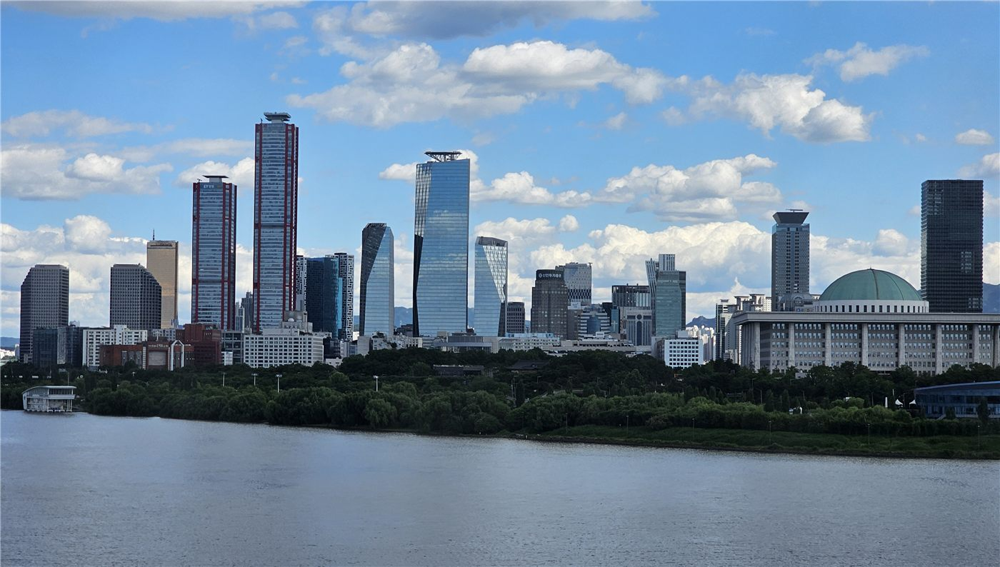

코스피 9,000 '천장' 뚫었다…'만스피' 향한 탄력
한국 증시 대표 지수인 코스피가 9,000선을 처음으로 돌파했다. 시장에서는 이제 10,000(만 포인트)을 뜻하는 '만스피' 기대까지 거론된다. 미국 증시 반등과 미·이란 종전 합의에 따른 위험선호 회복이 상승을 떠받쳤다.
손승종 기자 · 2026.06.19
橋한국

경향신문은 코스피가 9,000이라는 '천장'을 뚫고 '만스피'를 향해 탄력을 받고 있다고 전했다. 외국인과 기관의 매수세, 반도체·기술주 강세가 지수를 끌어올렸다는 분석이다.
광고 문의 · 300×250무엇이 지수를 밀어 올렸나
상승의 동력은 복합적이다. 반도체 업황 회복 기대, 기업 실적 개선, 그리고 미·이란 합의로 유가가 내리며 물가 부담이 줄어든 점이 맞물렸다. 전날 매파적 연준에 흔들렸던 글로벌 증시가 하루 만에 반등한 흐름도 한국 시장에 우호적이었다.
외국인 투자자의 귀환도 중요한 변수다. 위험선호가 살아나면 신흥국 자산으로 자금이 유입되는데, 코스피가 그 수혜를 받았다. 다만 강달러와 한미 금리 차는 자금 흐름의 변동성을 키우는 요인으로 남아 있다.
환호 속의 신중론
지수 신기록은 투자심리를 달구지만, 과열 경계의 목소리도 나온다. 기업 이익이 주가 상승을 뒷받침하지 못하면 조정이 올 수 있고, 환율 변동성은 외국인 자금의 향방을 흔든다. 시장은 '추세'와 '거품'을 가르는 지점을 주시한다.
재한 화인 투자자에게도 한국 증시의 상승은 자산 가치와 직결된다. 다만 환차손익까지 함께 고려해야 하므로, 원화 강세·약세 흐름을 함께 살피는 신중함이 필요하다.
제3의 시각
華橋時報는 9,000 돌파를 '기대가 만든 고점'으로 본다. 실적과 유동성, 대외 환경이라는 세 축이 동시에 우호적일 때 지수는 오른다. 그러나 한 축이 흔들리면 방향은 바뀐다. 우리는 신기록의 환호와 과열의 경고를 함께 전하며, 독자가 균형 있게 판단하도록 돕는다.
출처·참고 (사실 확인용 — 본문은 직접 재작성)
· 경향신문 2026.06.18 ''9000' 천장 뚫은 코스피, 탄력받는 '만스피''
· 경향신문 2026.06.18 ''9000' 천장 뚫은 코스피, 탄력받는 '만스피''